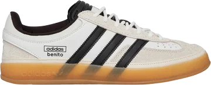

-

Bunny x Gazelle Indoor 'Core White'
Retail Price: $120
The adidas Gazelle Indoor Bad Bunny is part of a collaboration between adidas and Bad Bunny, a Puerto Rican rapper and singer known for his contributions to the Latin trap genre.
-
Travis Scott x Air Jordan 1 Retro Low OG
Retail Price: $150
The Jordan 1 Retro Low OG SP Travis Scott Medium Olive continues the highly coveted collaboration between Jordan Brand and Travis Scott, offering sneakerheads a fresh take on a classic silhouette.
-
Air Zoom Vomero 5 'Photon Dust Pink Foam'
Retail Price: $160
The Nike Zoom Vomero 5 Photon Dust Pink Foam (Women's) adds metallic-silver accents to the upper and splashes of Pink Foam across the sole unit.
-
2002R 'Protection Pack - Rain Cloud'
Retail Price: $150
The New Balance 2002R Protection Pack Rain Cloud features a grey mesh upper with tonal jagged suede overlays and a reflective New Balance logo.
-

Air Jordan 1 Retro High OG 'Dark Mocha'
Retail price: $170
The Dark Mocha 1 was one of the most anticipated releases in 2020 due to its familiar colorblocking that referenced two of the greatest Jordan 1s of all-time, the Jordan 1 Travis Scott and the Jordan 1 Black Toe.
-

Air Jordan 4 Retro 'Military Black'
Retail Price: $210
Jordan Brand flipped one of its original Air Jordan 4 colorways for the Air Jordan 4 Military Black.
-

Zoom Kobe 5 Protro 'X-Ray'
Retail Price: $190
The Nike Kobe 5 Protro X-Ray is a vibrant homage to Kobe Bryant's legendary career, taking inspiration from the iconic X-ray T-shirt that featured his hand adorned with five championship rings.
-

Air Jordan 4 Retro 'Oxidized Green'
Retail Price: $210
The Jordan 4 Retro Oxidized Green takes the recognizable Air Jordan 4 retro silhouette and updates it with a colorway of White and Neutral Gray with Oxidized Green accents.